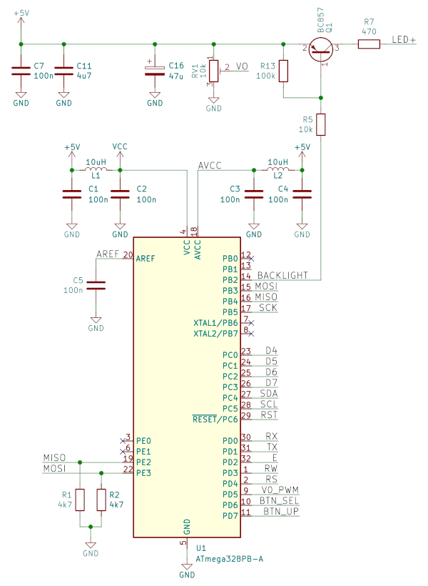
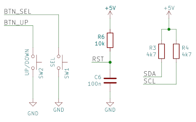
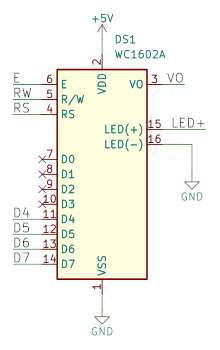

DIY DDT2
DDT2 is based around Atmega328PB and DS18B20+ integrated circuits. All functions are implemented in software and therefor not many passive elements are required. It needs 5V DC to operate.
BOM
- Atmega328PB — U1
- DS18B20+
- LCD1602, HD44780 compatible LCD — DS1
- 100n capacitor — C1, C2, C3, C4, C5, C6, C7 (mostly as decoupling capacitor)
- 4,7 µF capacitor — C11
- 47 µF capacitor — C16
- 10 µH inductor — L1, L2 (can be omitted)
- BC857 PNP — Q1
- 4,7 kΩ resistor — R1, R2, R3, R4
- 10 kΩ resistor — R5, R6
- 470 Ω resistor — R7 (LCD background current limiting)
- 100 kΩ resistor — R13
- 10 kΩ trim potentiometer — RV1 (LCD contrast)
- tactile switch — SW1, SW2
Relay is connected over SCK (B5). Logical zero means relay ON, so another PNP transistor and pull-up resistor are needed. Do not forget flyback diode for relay coil.
First DS18B20+ is connected to VCC, its data pin to SDA (C4) and its ground pin to MOSI (B3). Second DS18B20+ is connected to VCC, its data pin to SCL (C5) and its ground pin to MISO (B4).
Schematics
  Software
- FLASH image: diyddt2.hex
- EEPROM image: diyddt2.epp
If you're using USBASP programmer, flash with:
avrdude -c usbasp -p m328pb -B 5 -U flash:w:diyddt2.hex -U eeprom:w:diyddt2.epp
No (additional) fuse bits needed.
Troubleshooting
Questions? Drop mail to diy@[this domain].